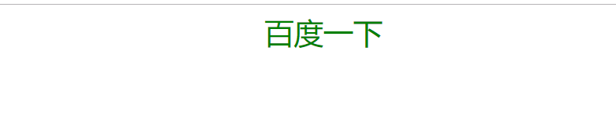
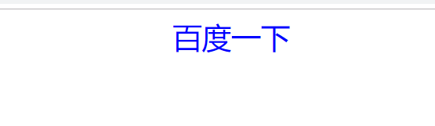
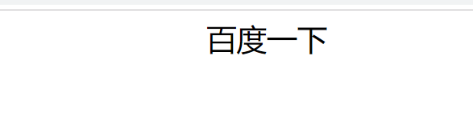

一、属性的认识
:link 表示鼠标点击之前，也称为原始状态；
:visited 表示鼠标点击之后状态；
:hover 表示鼠标悬停状态；
:active 表示鼠标点击状态；
L-V-H-A LV爱 HA恨
二、例子
<style>
div {
width: 100%;
}
a {
text-decoration: none;
display: block;
width: 20%;
margin: auto;
font-size: 30px;
}
a:link {
color: red;
}
a:visited {
color: black;
}
a:hover {
color: green;
}
a:active {
color: blue;
}
</style>
</head>
<body>
<div>
<a href="https://www.baidu.com/" target="_blank">百度一下</a>
</div>
</body>运行结果是：
1、初始，未访问状态
2、鼠标悬停时状态

3、点击是状态

4、点击之后状态

三、注意：有些浏览器，我们是访问过的，所以：link设置的状态是看不到的，要想看到的话，需要清除浏览器的缓存记录。